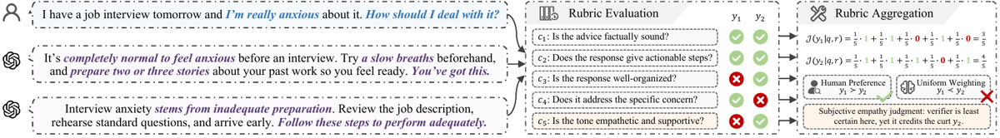
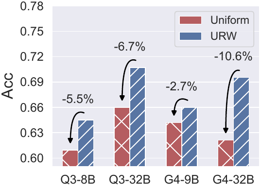
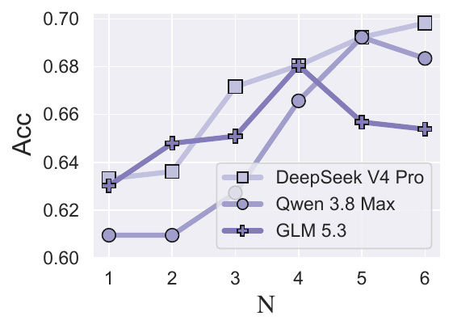

⚠️ Lecture à faire en miroir de
2610.06829(CLIFT), qui annonçait une garantie conforme inexistante. Ici le résultat est inverse : le théorème existe, il est énoncé dans le corps, l'échangeabilité est nommée en assumption et la preuve est complète et correcte. Le problème s'est déplacé — ce n'est plus l'absence de théorème, c'est l'écart entre ce que le théorème dit et ce que l'abstract en fait dire, et un contrôle décisif que le code publié implémente et que le papier ne rapporte pas.
TL;DR : interroger un vérifieur de rubrique binaire gelé et déterministe avec N=6 paraphrases
du prompt de jugement, moyenner les N verdicts en un score mou v̂_k ∈ {0,1/6,…,1}, et convertir
ce score en poids d'agrégation égal à la p-value conforme split du label voté, calibrée
sur ~2 000 triplets annotés hors ligne [§3.2, §3.3].
Claim principal, formulé précisément : le poids w̃_k = p(round(v̂_k) | v̂_k) (i) est monotone
dans la distance au point de bascule v̂_k = 0,5 [Prop. B.4], (ii) satisfait
P[w̃_k ≤ α, ṽ_k = v*] ≤ α pour tout α sous échangeabilité [Thm. 3.1, preuve App. B], et
(iii) améliore l'accuracy pairwise sur 15/15 cellules (5 benchmarks × 3 vérifieurs) [Tab. 1] et
les 4/4 configurations de RLVR aval [Tab. 5, Tab. 6].
⚠️ Mon verdict d'ensemble en une ligne : l'objet mathématique est réel, l'étiquette commerciale
est fausse (« coverage » ≠ ce qui est prouvé), et l'attribution du gain n'est pas faite — le
placebo existe dans le dépôt (baseline_random_weight.py) et ses chiffres sont absents du papier.
Trois corpus distincts, à ne pas confondre.
(a) Benchmarks d'évaluation de l'agrégation [§4.1, App. C.1] — tâche = préférence pairwise,
une paire (y_A, y_B) + un label humain gold par prompt ; on score les deux réponses avec la même
rubrique et on compare les agrégats. Les égalités ne reçoivent que la moitié du crédit [§4.1].
| Benchmark | Volume | Rubriques | Note |
|---|---|---|---|
| RubricBench | 1 147 paires | humaines, atomiques, expertes | « designed to expose misleading surface cues » |
| ResearchQA | 169 paires | humaines, minées de critères de survey | réponses longues scientifiques |
| RM-Bench | 387 paires | générées (RubricARM-8B-Rubric) | paires construites par matching diagonal du m-ième chosen avec le m-ième rejected |
| RewardBench | 456 (Chat-Hard) | générées | sous-ensemble le plus dur |
| RewardBench 2 | 480 (Precise-IF) | générées | instruction-following fin |
(b) Jeu de calibration D_cal [§4.1, App. C.1] : échantillonné de
RUBRIC-ARROW-Judge-SFT (OpenRubrics), stratifié par domaine, 200 prompts → ≈ 2 000 tuples
(prompt, réponse, critère, label gold v*). Disjoint de tous les splits d'évaluation.
⚠️ La provenance des labels v* n'est jamais précisée : « rubric-annotation corpus », rien
sur qui ou quoi a produit l'annotation (la carte HuggingFace du dataset est quasi vide : seul
task_categories: text-generation, taille 100K–1M, arXiv:2605.29156). Or v* est la référence
de toute la calibration conforme et la cible du score de non-conformité. Si v* est lui-même
une sortie de LLM distillée — ce que le suffixe « Judge-SFT » suggère sans le prouver — alors URW
calibre un vérifieur contre un autre vérifieur, et le mot « gold » est un abus. Non précisé.
(c) Corpus de RLVR [App. C.1] : RubricHub, filtré aux prompts ayant entre 4 et 20 rubriques, puis 1 000 prompts Chat + 1 000 prompts Science = 2 000 prompts. Évaluation aval zero-shot sur Arena-Hard et GPQA-Diamond, ni l'un ni l'autre utilisé pour construire le reward ou régler la méthode.
D_cal est tiré une fois et gelé).D_cal (corpus repris tel quel).Il n'y a pas d'environnement. URW est une règle d'agrégation sans entraînement, branchée entre un vérifieur de rubrique et un score scalaire. Ce qui en tient lieu :
{"satisfied": 1, "reason": "short evidence-based reason"} [App. C.2].reasoning_effort: high, 32 768 tokens de sortie max, N = 6 templates,
--verifier-parse-retries 2 (valeur lue dans le dépôt, absente du papier).parse-retries 2,
VERIFY_STAGE_MAX_PASSES=20, SCORE_STAGE_MAX_PASSES=20, RETRY_PASS_DELAY_SECONDS=5). Le
papier n'en dit rien.Answer: X, final answer: X, \boxed{X}, lettre terminale) ; « failed extractions are
recorded as evaluation errors » ; l'accuracy est calculée sur les réponses dont la lettre a
pu être extraite [App. C.2]. ⚠️ Le dénominateur dépend donc du taux de parse, qui n'est jamais
rapporté. Même structure sur Arena-Hard (« no parsable verdict … recorded as evaluation
errors », moyenne sur les parties parsables) [App. C.2]. Un modèle plus bavard ou moins
discipliné en format est mécaniquement avantagé par ce dénominateur.Nombre d'appels de vérifieur, non chiffré par le papier, reconstruit ici : par paire évaluée,
K critères × 6 templates × 2 réponses. Avec les 5 à 7 rubriques imposées au générateur
[App. C.2] ⇒ 60 à 84 appels par paire, chacun en reasoning_effort: high avec 32 768 tokens
de budget. ⚠️ Aucun coût, aucune latence, aucun décompte de tokens nulle part dans le papier.
v̂_k = (1/N) Σ_n v(q,y,c_k | t_n) ∈ {0,1/N,…,1}.
Les N=6 templates sont recopiés en entier [App. C.2] : même contrainte sémantique
(quantificateurs littéraux exactly ≠ at least ≠ at most, prohibitions satisfaites seulement
si l'élément interdit est totalement absent, jugement sémantique et non lexical, satisfaction
partielle = 0), six personas différents (« strict rubric verifier », « precise rubric
evaluator », « impartial criterion checker », « binary rubric judge », « rubric compliance
auditor », « neutral third-party observer »).s_i = |v̂_i − v*_i| ∈ [0,1] sur D_cal [§3.2]. Noter le
glissement : la préliminaire §2.2 définit s = |v(q,y,c_k) − v*| (verdict dur), la méthode
utilise |v̂ − v*| (verdict mou). Le théorème porte bien sur la version molle.p(u | v̂_k) = (1 + |{i : s_i ≥ s(v̂_k, u)}|) / (N_cal + 1), avec s(v̂_k,u) = |v̂_k − u|.w̃_k = p(ṽ_k | v̂_k) où ṽ_k = round(v̂_k) — la p-value du label
voté, pas du vrai label (inconnu au test).w_k = w̃_k / Σ_k' w̃_k', puis
J(y) = Σ_k w_k · round(v̂_k).round(v̂_k)). La règle d'agrégation
est une somme pondérée pure : pas de conjonction, pas de clause d'échec, pas de veto.
⚠️ Conséquence directe pour le juridique, voir §9 : aucun critère ne peut annuler le score.D_cal (200 prompts / ~2 000 tuples), le
choix du corpus de calibration et la stratification par domaine sont tous des choix libres, et
un seul des quatre (N) est balayé.C'est la question de la mission. Réponse en trois temps.
(i) Ce qui est garanti. Un seul énoncé, Theorem 3.1 « Validity of Uncertainty Weight », énoncé dans le corps [§3.3] et restaté puis prouvé en annexe [App. B, 10 lignes de preuve] :
Suppose the calibration triples in
D_caland the test triple(q,y,c_k,v*)are exchangeable under the same verifier and template poolT. Then, for everyα ∈ (0,1),P[w̃_k ≤ α, ṽ_k = v*] ≤ α.
La preuve est juste : les s_i sont des fonctions déterministes des tuples à vérifieur et pool
gelés, donc l'échangeabilité des tuples (Assumption B.1) transporte celle des scores ; le rang
donne la super-uniformité P[p_{n+1} ≤ α] ≤ ⌊α(n+1)⌋/(n+1) ≤ α ; sur l'événement {ṽ_k = v*}
on a w̃_k = p_{n+1} ; inclusion d'événements, fin. L'inégalité large dans la définition de la
p-value gère les ex æquo, ce qui est le bon réflexe sur un score à valeurs dans
{0, 1/6, …, 1} × {0,1} donc massivement discret.
S'y ajoute Proposition B.2 (monotonie du poids en |2v̂_k − 1|), également prouvée.
⇒ Contrairement à 2610.06829, tout lemme cité dans le texte ou une figure existe dans le
papier. Vérification faite : grep sur theorem|lemma|proposition|proof|assumption donne
exactement Thm 3.1 (× 2, corps + annexe), Ass. B.1, Prop. B.4, 2 preuves, 1 remarque. Aucun
renvoi orphelin, aucune figure n'annonce de résultat absent.
Et ce qui n'est PAS garanti — les auteurs l'écrivent eux-mêmes, dans une remarque qu'il faut citer intégralement [App. B, Remark B.3] :
Theorem 3.1 guarantees only that a correct judgment is rarely assigned a spuriously low weight. It does not guarantee that an incorrect judgment receives a low weight. The latter behavior depends on whether the multi-template score
v̂_kseparates uncertain or incorrect judgments from confident correct ones, which we evaluate empirically.
⚠️ C'est l'asymétrie décisive. Le théorème borne les faux downweights. Il ne dit rien sur la puissance : rien n'empêche la méthode de donner un poids 1 à tous les jugements, corrects comme faux — un poids constant satisfait trivialement la borne. Toute l'utilité de la méthode repose donc sur la moitié non prouvée, et c'est exactement la moitié que les expériences doivent établir ; d'où l'importance des contrôles manquants (§3.4). Et dans la logique juridique, l'asymétrie est à l'envers : ce qu'on veut en droit, c'est précisément « un jugement faux reçoit un petit poids » (ne pas créditer une analyse erronée), pas « un jugement correct reçoit rarement un petit poids ».
« Coverage » : le mot est faux. L'abstract dit « split-conformal p-values with provable
coverage guarantees », l'intro « a coverage-controlled scalar weight » (× 2) [§1]. Or :
- coverage apparaît 11 fois dans la source ; aucune n'est attachée au résultat de URW. Les
occurrences techniques sont §2.2 (la garantie de couverture marginale de SCP standard,
P[v* ∈ I_α] ≥ 1−α, éq. 2 — un ensemble de prédiction que URW n'utilise jamais) et la
related work. Les autres sont des slogans de l'abstract/intro ou le mot « coverage » au sens
de « couverture de domaines ».
- marginal apparaît 2 fois, toutes deux pour SCP ou la littérature, jamais pour URW.
- Le corps est, lui, rigoureux : §3.3 et la conclusion disent « validity » et « controls the
probability of assigning a spuriously low weight », jamais « coverage ».
⇒ Verdict : il y a une garantie de validité (super-uniformité d'une p-value), il n'y a pas de
garantie de couverture. L'écart est entre l'abstract et le corps, pas dans le corps. C'est un
mode de défaillance plus bénin que celui de CLIFT, mais c'est le même réflexe : prendre
l'étiquette conforme pour la chose.
(ii) Sous quelles hypothèses. Assumption B.1, « Exchangeability under frozen verifier
configuration » : conditionnellement au vérifieur v et au pool T gelés, la suite augmentée
(Z_1,…,Z_{N_cal+1}) est échangeable. Trois remarques :
- l'hypothèse est nommée, numérotée, et discutée — y compris dans la section Limitations. Sur
ce point le papier est au-dessus de la moyenne du corpus ;
- elle est marginale, non conditionnelle : aucune version par groupe, par type de critère
(objectif vs subjectif), par domaine ou par benchmark. Ironie du dispositif : la variante
conditionnelle par groupe existe dans le papier — c'est la baseline Mondrian-SCP (quantile
calibré dans chacun des B = 6 bins de v̂) — et URW l'abandonne. URW est donc, sur
l'axe du conditionnement, un recul assumé par rapport à sa propre baseline ;
- la justification empirique de l'hypothèse est une phrase, deux fois : la diversité de domaines
de D_cal « supports / is intended to make … a reasonable approximation » [§4.1, App. C.1].
⚠️ C'est un vœu. D_cal vient d'un corpus (RUBRIC-ARROW-Judge-SFT) et les tests viennent de
cinq autres (dont RubricBench, explicitement adversarial) : c'est par construction un
covariate shift, pas de l'échangeabilité. Les auteurs citent wcp (weighted conformal) et
aci en related work comme les outils qui traiteraient ce cas — et ne les utilisent pas.
(iii) Ces hypothèses tiennent-elles quand les réponses viennent d'une politique en cours d'optimisation ? — NON, et les auteurs le concèdent. Section Limitations, verbatim :
URW's theoretical guarantee relies on exchangeability between calibration and test triples, which can be strained by distribution shifts during RLVR training. Periodic re-calibration and adaptive inference techniques (aci) are promising directions to counteract such shifts.
⚠️ Ce n'est pas une limitation périphérique, c'est une annulation du théorème dans le réglage
du RQ5. D_cal est tiré une fois, hors ligne, avant l'entraînement, et jamais retouché
pendant les 150 pas de GRPO. Les triplets de test sont des réponses d'une politique qui change à
chaque pas : au pas 150 la distribution des (q, y, c) n'a plus aucune raison d'être
échangeable avec D_cal. La garantie est valide à l'évaluation (Tab. 1–4, vérifieurs gelés,
réponses fixes des benchmarks) et vide à l'entraînement (Tab. 5–6). Les deux moitiés du papier
ne sont pas couvertes par le même régime, et ce n'est dit nulle part ailleurs que dans les
limitations.
Aucune variante adaptative n'est implémentée : pas d'ACI, pas de poids décroissants, pas de
recalibration périodique, pas de weighted conformal, aucune mesure de dérive (ni taux
d'erreur de calibration au cours des steps, ni distribution de v̂ au step 0 vs 150).
La question demandait les chiffres. Il n'y en a pas. Détail de ce qui est produit à l'appui du titre :
| Forme de preuve attendue | Présent ? | Détail |
|---|---|---|
| Entropie / probabilité / logit des verdicts | non | entropy : 0 occurrence. logit : 1 occurrence, dans la phrase qui affirme l'absence (« carries no probability, logit, or confidence signal »). L'argument est définitionnel : vérifieur API boîte noire, décodage à température 0, sortie JSON binaire ⇒ pas de signal. Note de bas de page : « We refer to the LLM verifier as an API-based black-box verifier » [§3.1] |
| Cohérence sous ré-échantillonnage | mesurée mais jamais rapportée | c'est exactement ce que fait la baseline Sampling Ensemble (6 décodages à T=0,7). Son taux d'accord n'est jamais publié — seule son accuracy aval l'est |
| Confiance verbalisée | non rapportée — et pourtant implémentée | ⚠️ voir §3.4 : le dépôt contient baseline_verbalized_confidence_weight.py et un flag --verifier-emit-confidence dont l'aide dit « Enable Verbalized Confidence baseline (paper baseline). Per-criterion verifier returns satisfied+confidence(1..10) in the same JSON call ». Donc le même appel API boîte noire peut rendre une confiance — ce qui contredit frontalement la prémisse « the verifier provides no confidence signal ». Aucune ligne dans aucun tableau |
| Accord inter-juges | non | kappa : 0. Les 3 vérifieurs tournent en parallèle, jamais croisés. Deux variantes multi-vérifieurs (conformal_multi_verifier_weight, conformal_pvalue_multi_verifier_weight) sont dans le code, absentes du papier |
| Sur-confiance (calibration) vs dégénérescence (toujours la même note) | ni l'un ni l'autre | voir ci-dessous |
| Plafond de bruit (accord inter-annotateurs sur les mêmes items) | non | inter-annotator : 0. noise ceiling : 0. Le seul chiffre humain du papier est l'audit des templates, pas des jugements : 50 paires, seuil 2/50 [App. C.2] |
Sur-confiant ou dégénéré ? Les deux hypothèses sont confondues et aucune n'est testée. La
distinction demandée est la bonne, et le papier ne la fait pas :
- dégénéré = le vérifieur rend toujours le même verdict, ou les 6 templates sont toujours
unanimes (v̂_k ∈ {0,1} presque partout) ⇒ le signal est quasi constant et URW ≈ Uniform ;
- sur-confiant = v̂_k est bien concentré aux extrêmes mais se trompe souvent à l'extrême
⇒ le poids élevé est accordé à des jugements faux, et la méthode empire le problème.
Le chiffre qui tranche est la distribution de v̂_k (fréquence de 0, 1/6, …, 1) et la
précision conditionnelle à v̂_k (une courbe de fiabilité par bin). ⚠️ Aucun des deux n'est
rapporté nulle part — ni dans le corps, ni dans les deux annexes expérimentales, alors que
la baseline Mondrian-SCP bin déjà v̂ en 6 classes et que ces histogrammes existent donc
nécessairement dans les logs des auteurs. C'est, à mon sens, l'absence la plus coûteuse du
papier : c'est la mesure qui porte le titre.
La seule « preuve » du titre est la Figure 1, une vignette construite à la main (pas un
item de benchmark, aucun identifiant) : question sur l'anxiété avant entretien, y_1 empathique,
y_2 correct mais sec ; 5 critères ; J(y_1) = 3/5 < J(y_2) = 4/5 sous poids uniformes, contre
la préférence humaine y_1 ≻ y_2. ⚠️ La figure stipule l'incertitude du vérifieur (« Subjective
empathy judgment: verifier is least certain here, yet it credits the curt y_2 ») — elle ne la
mesure pas. Et l'exemple montre un jugement faux sur un critère subjectif, ce qui est une
affirmation sur la justesse, pas sur l'incertitude : rien n'exclut que le vérifieur soit
très « certain » et simplement faux, auquel cas URW lui donnera un poids élevé et aggravera
l'inversion.
Sans plafond de bruit, le désaccord inter-templates n'est pas interprétable. Le papier fait l'hypothèse — jamais testée — que « cross-template disagreement reflects verifier uncertainty rather than a shift in what is being asked » [§3.2], et l'adosse à l'audit 50-paires / seuil 2. ⚠️ Un seuil de 2/50 autorise jusqu'à 4 % de comportements changeant la sémantique par template retenu ; avec 6 templates, l'union de ces 4 % n'est pas négligeable devant des écarts d'accuracy de 1 à 3 points. Et surtout : sur un critère légitimement ambigu (« le ton est-il empathique ? »), le désaccord entre paraphrases est le comportement correct d'un juge, pas un défaut. URW le punit par un poids faible — ce qui est défendable comme politique, mais n'est alors pas de la quantification d'incertitude du vérifieur : c'est une pénalisation de la subjectivité du critère. Le papier admet la confusion en Limitations (« it does not separately identify other sources of uncertainty, such as intrinsic ambiguity in the rubric or the underlying task »).
Dans l'ordre demandé.
(i) Bras placebo — ⚠️ IL EXISTE DANS LE CODE ET N'EST PAS DANS LE PAPIER. C'est le point le
plus dur de cette lecture. Le dépôt anonyme contient
src/weighting/methods/baseline_random_weight.py, dont la docstring énonce exactement le
contrôle que la grille réclame — verbatim :
Random rubric-weight baseline. This no-LLM baseline isolates the mechanical benefit of tie-breaking: any non-uniform weight vector converts most uniform-sum ties into A/B calls, so a weighting method must beat random weights — not just uniform weights — to demonstrate genuine importance estimation.
Implémentation : un vecteur Dirichlet(1,…,1) par échantillon, seedé de façon déterministe par
sha256(seed:sample_id), llm_calls: 0. Le flag --random-weight-seed est documenté dans
pipeline.sh. Aucun chiffre de ce bras n'apparaît dans le papier, ni en Tab. 1, ni en Tab. 2,
ni en annexe. Les auteurs ont donc construit, nommé et argumenté le placebo, puis ne l'ont pas
publié.
⚠️ Mon analyse, à charge et à décharge : un bris d'égalité symétrique devrait être neutre en
espérance (une égalité créditée 0,5 devient 0 ou 1 avec probabilité 1/2), donc le placebo
devrait retomber sur Uniform et confirmer URW. Ce qui rend l'omission d'autant plus
inexplicable : le contrôle était gratuit (llm_calls: 0), implémenté, et probablement favorable.
En l'état, le gain n'est pas attribué : on ne peut pas distinguer « estimation d'importance
calibrée » de « n'importe quelle pondération non uniforme sur une métrique qui ne crédite les
égalités qu'à moitié ». Même conclusion pour un jeu de calibration permuté : absent du
papier et du code (permut : 0 occurrence dans la source LaTeX).
(ii) Baseline triviale. Présentes et réelles : Uniform (plancher sans signal),
Beta-Binomial (Beta(1,1), moyenne a posteriori), Sampling Ensemble (self-consistency,
6 décodages à T=0,7, pondération par ratio de votes), SCP (abstention dure sur quantile global,
α=0,1), Mondrian-SCP (quantile par bin, B=6) [§4.1, App. C.2]. Le vote majoritaire pur est
couvert par Sampling Ensemble et par URW† (round(v̂) à poids uniformes).
⚠️ Manquent : la confiance verbalisée (implémentée, étiquetée « paper baseline » dans l'aide
du code, jamais rapportée) et le placebo ci-dessus. Deux baselines écrites et retirées.
⚠️ Même écart côté ablation : le dépôt contient conformal_pvalue_weight_aba1/aba2/aba3.py,
soit trois variantes d'ablation, alors que le Tab. 2 n'en rapporte que deux (URW†, URW‡).
(iii) Budget d'appels de juge apparié — oui entre les méthodes d'incertitude, NON contre la
référence qui porte tous les chiffres.
- Beta-Binomial, SCP, Mondrian-SCP réutilisent le même v̂ à 6 templates qu'URW ⇒
strictement appariés (0 appel supplémentaire). Sampling Ensemble fait 6 décodages ⇒
apparié aussi. C'est propre, et c'est à mettre au crédit du papier.
- ⚠️ Uniform est à 1 appel par critère (le papier le dit lui-même : « N=1 in the figure
corresponds to the Uniform aggregation baseline » [§4.5] ; et Tab. 2 marque Multi. ✗ pour
Uniform). Or 100 % des colonnes « RI » du papier sont calculées contre Uniform, et tous les
chiffres de l'abstract et de l'intro en découlent. Un facteur 6 de budget de juge sépare la
méthode de sa référence. Le contrôle qui manque est trivial et absent : Uniform appliqué au
label voté sur 6 templates — c'est précisément URW†, qui existe en Tab. 2 et récupère
déjà une part importante du gain (ex. DeepSeek / RewardBench 2 : Uniform 0,625 → URW† 0,682 →
URW 0,759 ; soit +5,7 pts pour le simple ensembling à budget 6×, +7,7 pts de plus pour la
calibration). ⇒ Le gain de l'abstract mélange « 6 appels au lieu de 1 » et « pondération
conforme ». Tab. 2 permet de les séparer ; l'abstract ne le fait pas.
- ⚠️ D_cal est un coût d'appel supplémentaire jamais compté : ~2 000 tuples × 6 templates
≈ 12 000 appels de vérifieur en reasoning_effort: high, avant la moindre évaluation. La
sensibilité à N_cal n'est pas étudiée dans le papier, alors que le code expose
--calibration-sample-size / --calibration-sample-seed exactement pour ça.
Reward dans un vrai run de RL, ou estimateur hors ligne ? — LES DEUX, et c'est la différence
qui compte. Contrairement à la plupart des papiers « conformal + LLM », URW est réellement
branché comme reward dans un run GRPO [§4.6, App. C.2] : Qwen 3 8B et GLM 4 9B optimisés sur
2 000 prompts RubricHub, vérifieurs Qwen 3 32B / GLM 4 32B, framework VeRL-Rubric
(github.com/DoYangTan/verl-rubric, HTTP 200), 150 pas GRPO pour toutes les méthodes,
« only their rubric-reward aggregation differs ». Gains : Arena-Hard WR 61,9 → 76,5 (Qwen) et
30,0 → 48,7 (GLM) ; GPQA-Diamond 55,1 → 65,7 et 33,3 → 50,0 [Tab. 5, Tab. 6].
⚠️ Mais c'est aussi exactement le régime où le théorème ne s'applique plus (§3.2-iii), et le
protocole a trois trous :
- aucune ligne « modèle de base sans RL » dans Tab. 5 ni Tab. 6. On ne peut donc pas savoir si
l'une quelconque des six variantes améliore la politique de départ. Si l'agrégation uniforme
dégradait le modèle de base, « URW > Uniform » signifierait seulement « URW dégrade moins » ;
- un seul run, aucun seed, aucun IC, sur des deltas qui atteignent +16,7 pts de WR ;
- zéro hyperparamètre de GRPO : KL n'apparaît que comme macro LaTeX inutilisée ;
learning rate, batch, group size, clip, rollout : 0 occurrence. Seuls 150 pas,
2 000 prompts, température d'éval 1,0 et 16 384 tokens de sortie sont donnés. Le dépôt publié
ne contient aucun code de RL (scripts/ = calibration, conformal_pvalue_weight,
preprocess, splitting ; aucune occurrence de verl, grpo, policy, train dans
pipeline.sh). La moitié RL du papier n'est pas reproductible.
- ⚠️ Ambiguïté de budget en RL : App. C.2 dit « the verifier evaluates every criterion under the
fixed template pool, and the resulting binary judgments are aggregated with the method-specific
rule » — ce qui suggère 6 templates pour toutes les méthodes, Uniform compris (donc budget
apparié en RL), alors qu'à l'évaluation Uniform est à 1 template. Les deux expériences
n'utilisent pas la même définition de Uniform, et rien ne le signale.
pipeline.sh expose --pvalue-fallback-uniform : « For conformal_pvalue_weight: fall back to
uniform when all p-values are 0 » (activé par défaut ; --no-pvalue-fallback-uniform lève une
exception à la place). ⚠️ Donc URW retombe silencieusement sur Uniform dans un cas de bord non
documenté dans le papier — cas qui se produit quand tous les v̂_k d'un prompt sont au point de
bascule, c'est-à-dire sur les prompts les plus incertains, exactement ceux que la méthode est
censée traiter. La fréquence de ce repli n'est rapportée nulle part. Même remarque pour
--bayesian-fallback-uniform côté baseline.
hack : 0 occurrence. degenerate : 0. Aucun test contre des réponses dégénérées, des mutants,
une politique adverse. Les seules protections sont en amont, dans le prompt du générateur de
rubriques (« hard to satisfy through verbosity, boilerplate, or keyword stuffing », critères
orthogonaux, gardes négatives) [App. C.2] — donc déclaratives et non évaluées.
⚠️ Et la structure du reward est propice : somme pondérée positive, w_k ≥ 0, Σ w_k = 1,
jugements round(v̂_k) ∈ {0,1}, sans clause d'échec. Une politique qui apprend à rendre les
critères difficiles ambigus (donc v̂ ≈ 0,5, donc poids faible) et les critères faciles
évidents redistribue mécaniquement la masse de poids vers ce qu'elle sait faire. C'est un
canal de hacking créé par la méthode et jamais testé : la renormalisation w_k/Σw_k fait que
baisser la certitude sur un critère augmente le poids relatif de tous les autres.
FP et FN du vérifieur, séparément et avec dénominateurs distincts : jamais mesurés. Les trois
quantités que la grille distingue (accord juge↔humain, accord inter-juges, reproductibilité du
juge) sont ici réduites à une seule et indirecte : v̂ agrège la reproductibilité du juge
sous paraphrase, et c'est tout.
VeRL-Rubric (https://github.com/DoYangTan/verl-rubric, testé, HTTP 200).KL n'apparaît que comme
\newcommand{\KL}, et learning rate, batch, group size, clip, rollout ont
0 occurrence.GPU, A100, H100, cost : 0 occurrence.Le papier ne rapporte aucun failure mode et aucun cas de reward hacking. Ce qui est traité ressemble à des failure modes mais n'en est pas :
| Cas | Comportement | Détection | Correction | Correction évaluée ? |
|---|---|---|---|---|
| Inversion de préférence par un critère subjectif | un jugement incertain bascule l'agrégat | Fig. 1 (vignette construite) | la pondération URW elle-même | non — aucune mesure du taux d'inversion avant/après |
| Template changeant la sémantique | une paraphrase modifie la question posée | audit croisé, 50 paires | rejet si > 2/50 | non — nombre de templates rejetés jamais donné |
| Toutes les p-values nulles | la méthode n'a plus de poids à distribuer | code seulement | repli silencieux sur Uniform (§3.5) | non — fréquence jamais rapportée |
| Rubriques générées faibles | Uniform tombe à 0,501–0,569 sur RubricBench/ResearchQA [Tab. 3, Tab. 4] | comparaison des sources de rubrique | aucune | non — l'observation est présentée comme un succès de robustesse |
| Échec de parse en éval aval | GPQA / Arena-Hard sans verdict extractible | règles ordonnées + « evaluation errors » | retrait du dénominateur [App. C.2-B.5] | non — taux jamais rapporté |
⚠️ Crédibilité de l'absence de hacking : faible, et pour une raison structurelle. Les rewards rubrique à somme pondérée normalisée sont hackables par redistribution de masse (§3.6) ; 150 pas de GRPO sur 2 000 prompts est probablement trop court pour que ça se manifeste, ce qui explique mieux l'absence d'incident que la qualité du vérifieur. L'indice le plus net que le reward n'est pas robuste est ailleurs, dans Tab. 3 et Tab. 4 : avec des rubriques générées par LLM, le pipeline entier est à 0,501–0,569 d'accuracy pairwise sur RubricBench, c'est-à-dire au niveau du hasard — et c'est dans ce régime que le papier revendique « +2,9 % RI ». Une amélioration relative sur une base aléatoire n'est pas un signal.
Section quasi vide, et c'est à relever pour une méthode dont le coût est le principal obstacle.
--num-workers 16, --queue-maxsize 1000, --max-concurrency-per-key 4, --rpm-per-key 20,
--request-timeout-seconds 120, --max-retries 3, backoff exponentiel 1→? s, cooldown par clé,
VERIFY_STAGE_MAX_PASSES=20. 20 RPM par clé suggère un pipeline d'éval long en jours, pas
en heures.K × 6 × 2 appels par paire ⇒ 60–84 appels/paire × 2 639 paires × 3 vérifieurs, plus
~12 000 appels de calibration, tous en reasoning_effort: high avec 32 768 tokens de budget
de sortie. En RL : 6× le coût de reward d'une rubrique mono-template, à chaque rollout, à
chaque pas. ⚠️ C'est le vrai verrou de transfert, et il n'est pas chiffré.| Chiffre / claim annoncé | Où | Source dans le corps | Verdict |
|---|---|---|---|
| « judgment certainty varies substantially across criteria » | abstract | aucune mesure dans tout le papier : ni distribution de v̂_k, ni entropie, ni courbe de fiabilité par bin de v̂ |
introuvable — prémisse du titre, jamais quantifiée (cf. §3.3) |
| « Verifiers output a binary decision per criterion, without any confidence signal » | §1 | affirmation structurelle + note « API-based black-box verifier » [§3.1] | contredit par le code des auteurs : --verifier-emit-confidence fait rendre satisfied + confidence(1..10) dans le même appel JSON, et l'aide l'étiquette « Verbalized Confidence baseline (paper baseline) ». Aucune ligne dans aucun tableau |
| « split-conformal $p$-values with provable coverage guarantees » | abstract | Thm. 3.1 = P[w̃_k ≤ α, ṽ_k = v*] ≤ α, une borne de validité (super-uniformité). coverage n'est jamais attaché à URW (11 occurrences, toutes pour SCP §2.2 ou la related work) ; marginal jamais pour URW |
sur-généralisé — vrai pour le SCP de la préliminaire (éq. 2, P[v* ∈ I_α] ≥ 1−α), faux pour URW, qui ne construit aucun ensemble de prédiction. Le corps dit correctement « validity » |
| « a coverage-controlled scalar weight » (× 2) | §1 | idem | sur-généralisé — même substitution |
| « the probability of assigning a spuriously low weight to a correct judgment is provably controlled » | §1 | Thm. 3.1 + preuve App. B | confirmé — c'est l'énoncé exact, la preuve est correcte |
| « URW consistently improves pairwise preference accuracy » | abstract | Tab. 1 : URW est au-dessus d'Uniform et de toutes les baselines sur 15/15 cellules | confirmé comme tabulé, mais ⚠️ contredit par la Fig. 3 au N déclaré — voir ligne suivante |
| Tab. 1, ResearchQA, GLM 5.3 = 0,680 (et Qwen 3.8 Max = 0,692) à « N = 6 » | Tab. 1 / §4.1 | Fig. 3(b), mesurée au pixel (calibration ancrée sur les points N=1, qui reproduisent les valeurs Uniform du Tab. 1 à ±0,001) : GLM 5.3 à N=6 ≈ 0,654, à N=5 ≈ 0,657, à N=4 ≈ 0,6805 ; Qwen à N=6 ≈ 0,684, à N=5 ≈ 0,692 |
contredit : 0,680 vs ≈0,654 pour GLM (écart 0,026, soit > 10× l'incertitude de lecture) et 0,692 vs ≈0,684 pour Qwen. Les valeurs du Tab. 1 coïncident exactement avec l'argmax sur N par vérifieur (DeepSeek N=6, Qwen N=5, GLM N=4) alors que App. C.2 déclare « a fixed pool of N=6 ». Même signature, plus faible, sur RubricBench (DeepSeek Tab. 1 = 0,802 = valeur à N=5 ; N=6 ≈ 0,8008) |
| « URW is the best-performing method in every configuration » | §4.4 | conséquence du point précédent : à N=6 déclaré, GLM 5.3 / ResearchQA donnerait URW ≈ 0,654 < Mondrian-SCP 0,663 | contredit dans au moins une cellule, sous réserve de la lecture graphique |
| « Uniform aggregation yields the lowest accuracy across settings » | §4.2 ❶ | Tab. 1, DeepSeek / RM-Bench : Uniform 0,729 vs Sampling Ensemble 0,711 (−2,48 %). Idem Tab. 3 (Qwen généré 0,538 vs SE 0,536 ; GLM 0,558 vs SE 0,556 et SCP 0,557) et Tab. 4 (Qwen généré 0,583 vs SE 0,571) | contredit — Uniform n'est pas le plus bas dans 5 cellules au moins |
| « improvements range from 0,6 to 15,1 relative accuracy points » (backbones) | §4.4 | Fig. 2 (20 comparaisons) | introuvable comme unité : « relative accuracy points » n'existe pas (ou bien des points, ou bien du relatif), et les annotations de la Fig. 2 sont en convention inverse (négative) de la colonne RI des tableaux — voir §8 |
| « covering all 20 verifier–benchmark comparisons » | §4.4 | 4 backbones (Q3-8B, Q3-32B, G4-9B, G4-32B) × 5 benchmarks | confirmé arithmétiquement |
| « subsequent changes … may fluctuate within the 15 % confidence intervals » | §4.5 | Fig. 3 et Fig. 4 : aucune barre d'erreur, aucune bande de confiance, aucun seed, aucun écart-type nulle part dans le papier (error bar, std, variance : 0 occurrence ; confidence interval : cette seule occurrence) |
introuvable — et un « intervalle de confiance à 15 % » n'est pas un objet statistique standard |
| « delivers stronger downstream RL alignment » | abstract | Tab. 5 (Qwen 3 8B : 61,9 → 76,5 WR ; 55,1 → 65,7 Acc) et Tab. 6 (GLM 4 9B : 30,0 → 48,7 ; 33,3 → 50,0), 4/4 configurations | confirmé comme tabulé, sur-généralisé comme conclusion : aucune ligne « modèle de base sans RL », 1 seul run, aucun seed, 150 pas, zéro hyperparamètre GRPO publié, aucun code RL dans le dépôt |
| « training-free » | abstract, §1, App. B | aucun paramètre appris | confirmé au sens strict, ⚠️ sur-généralisé en pratique : exige ~2 000 triplets annotés en gold (D_cal) et ≈ 12 000 appels de vérifieur de calibration. « Training-free » ≠ « annotation-free » ≠ « gratuit » |
| « requires no additional hyperparameter » | §4.1 | vrai : pas d'α, pas de bins (contrairement à SCP / Mondrian-SCP) | confirmé pour α ; ⚠️ sur-généralisé : N, N_cal, le corpus de calibration et sa stratification restent des choix, et le code expose --conformal-num-templates, --conformal-alpha, --calibration-sample-size, --pvalue-mode {label_0,label_1,voted} |
| « Qwen 3.8 Max Uniform drops from 0,791 to 0,538 on RubricBench » (rubriques générées) | §4.4 | Tab. 3 | confirmé. ⚠️ Et contexte jamais tiré par les auteurs : à 0,501–0,569 sur une tâche pairwise, tout le pipeline est au niveau du hasard ; les « RI » de ce bloc sont des gains relatifs sur une base aléatoire |
| « Theorem … the bound holds uniformly over α, so no miscoverage rate need be fixed in advance » | §3.3 | la preuve établit bien la super-uniformité pour tout α | confirmé |
| « It does not guarantee that an incorrect judgment receives a low weight » | App. B, Remark B.3 | — | confirmé, et c'est la concession la plus importante du papier (cf. §3.2-i) |
Bilan 7.0 : 6 confirmés nets · 3 contredits (dont un par le code des auteurs eux-mêmes et
un entre Tab. 1 et Fig. 3 sur les chiffres de tête) · 3 introuvables (la prémisse du titre,
l'unité des gains de backbone, les « intervalles de confiance à 15 % ») · 4 sur-généralisés
(dont deux fois le mot « coverage » et une fois « training-free »).
⇒ case coherence fausse.
Tab. 1 — accuracy pairwise, 5 benchmarks × 3 vérifieurs gelés (égalités à demi-crédit)
| Vérifieur / Méthode | RubricBench | ResearchQA | RM-Bench | RewardBench CH | RewardBench 2 PIF |
|---|---|---|---|---|---|
| DeepSeek V4 Pro — Uniform | 0,780 | 0,633 | 0,729 | 0,766 | 0,625 |
| Beta-Binomial | 0,781 | 0,639 | 0,739 | 0,772 | 0,688 |
| Sampling Ensemble | 0,781 | 0,669 | 0,711 ↓ | 0,785 | 0,731 |
| SCP | 0,780 | 0,645 | 0,745 | 0,784 | 0,693 |
| Mondrian-SCP | 0,793 | 0,657 | 0,762 | 0,786 | 0,719 |
| URW | 0,802 | 0,698 | 0,792 | 0,810 | 0,759 |
| Qwen 3.8 Max — Uniform | 0,791 | 0,609 | 0,744 | 0,782 | 0,679 |
| Mondrian-SCP | 0,807 | 0,651 | 0,762 | 0,800 | 0,705 |
| URW | 0,819 | 0,692 | 0,786 | 0,810 | 0,721 |
| GLM 5.3 — Uniform | 0,803 | 0,630 | 0,731 | 0,760 | 0,730 |
| Mondrian-SCP | 0,810 | 0,663 | 0,740 | 0,780 | 0,750 |
| URW | 0,818 | 0,680 | 0,757 | 0,788 | 0,769 |
Écart URW − Mondrian-SCP (le concurrent le plus proche, à budget d'appels strictement égal) : +0,9 à +4,1 pts selon la cellule, médiane ≈ +2 pts. C'est le chiffre honnête du papier. Écart URW − Uniform : +1,5 à +13,4 pts — mais à 6× le budget de juge.
Tab. 2 — ablation (décomposition du gain), DeepSeek V4 Pro
| Variante | Multi-templates | Calibration | RubricBench | ResearchQA | RM-Bench | RewardBench | RewardBench 2 |
|---|---|---|---|---|---|---|---|
| Uniform | ✗ | ✗ | 0,780 | 0,633 | 0,729 | 0,766 | 0,625 |
| URW† (ensembling seul) | ✓ | ✗ | 0,779 ↓ | 0,645 | 0,736 | 0,781 | 0,682 |
| URW‡ (calibration seule, 2 templates) | ✗ | ✓ | 0,791 | 0,648 | 0,758 | 0,797 | 0,716 |
| URW | ✓ | ✓ | 0,802 | 0,698 | 0,792 | 0,810 | 0,759 |
⚠️ Trois lectures que le papier ne fait pas : (1) URW† régresse sous Uniform sur RubricBench pour deux vérifieurs sur trois (DeepSeek 0,780 → 0,779 ; GLM 0,803 → 0,801) — l'ensembling seul n'est pas monotone ; (2) URW‡ > URW† partout, donc c'est la calibration qui porte le gain, pas l'ensembling — ce qui est le bon résultat pour les auteurs mais rend l'absence du placebo encore plus gênante, puisque c'est précisément la brique dont on ne sait pas si elle bat du Dirichlet ; (3) URW‡ consomme 2 templates, donc l'ablation « sans ensembling » n'est pas à budget 1, et le vrai contrôle à budget apparié (Uniform sur label voté à 6 templates = URW†) montre que jusqu'à 5,7 pts sur 13,4 viennent du seul passage de 1 à 6 appels (DeepSeek / RewardBench 2).
Tab. 5 / Tab. 6 — RLVR aval, 150 pas GRPO
| Méthode | Qwen 3 8B — Arena-Hard WR | Qwen 3 8B — GPQA-D Acc | GLM 4 9B — WR | GLM 4 9B — Acc |
|---|---|---|---|---|
| Uniform | 61,9 | 55,1 | 30,0 | 33,3 |
| Beta-Binomial | 67,3 | 58,1 | 39,0 | 35,4 |
| Sampling Ensemble | 67,8 | 58,6 | 38,4 | 38,9 |
| SCP | 68,4 | 60,1 | 41,1 | 42,4 |
| Mondrian-SCP | 69,8 | 62,6 | 42,4 | 43,4 |
| URW | 76,5 | 65,7 | 48,7 | 50,0 |
| modèle de base, sans RL | absent | absent | absent | absent |
⚠️ L'ordre des six méthodes est identique dans les quatre colonnes (Uniform < Beta-Binomial ≈ Sampling Ensemble < SCP < Mondrian-SCP < URW). Un ordre parfaitement monotone sur 4 configurations indépendantes, sans un seul croisement et sans aucun IC, est soit un signal très propre, soit l'indice d'un pipeline d'évaluation corrélé — impossible de trancher sans seeds.
D_cal ne vient d'aucun des benchmarks d'éval.D_cal, calibré
une fois, réutilisé sans re-tuning sur 5 benchmarks × 3 vérifieurs frontier + 4 backbones
open de 8B à 32B × 5 benchmarks, et 2 sources de rubrique (humaine / LLM) [§4.4]. C'est
l'élément le plus transférable du papier : la distribution de non-conformité semble porter
d'un vérifieur à l'autre sans recalibrage. ⚠️ Mais c'est aussi la preuve que l'échangeabilité
n'est pas prise au sérieux : si la même S marche sur DeepSeek V4 Pro et sur un Qwen 3 8B,
c'est que S est à peu près insensible au vérifieur — auquel dire que la garantie est
« conditionnelle au vérifieur gelé » (Ass. B.1) perd son contenu.N_cal : non étudié, bien que le code expose le knob.| Case | Valeur | Justification en une ligne |
|---|---|---|
baselines |
faux | Les 4 baselines d'incertitude partagent bien le même v̂ à 6 templates (apparié), mais 100 % des « RI » du papier sont calculés contre Uniform à 1 appel sur 6, et deux contrôles écrits par les auteurs eux-mêmes — baseline_random_weight.py (placebo Dirichlet) et baseline_verbalized_confidence_weight.py (étiqueté « paper baseline » dans l'aide) — ne sont rapportés nulle part. |
ablation |
vrai | Tab. 2 isole les deux briques (ensembling / calibration) sur 3 vérifieurs × 5 benchmarks et montre que la calibration porte l'essentiel du gain ; Fig. 3-4 balaient N de 1 à 6 sur les 5 benchmarks. |
variance |
faux | Aucun seed, aucun écart-type, aucune barre d'erreur dans tout le papier (error bar/std/variance : 0 occurrence) ; la seule mention d'IC (« 15 % confidence intervals », §4.5) n'a aucun correspondant graphique ; les Tab. 5-6 sont des runs uniques. |
coherence |
faux | 3 contredits (« no confidence signal » démenti par le flag --verifier-emit-confidence du dépôt ; « Uniform is the lowest across settings » démenti par 5 cellules du Tab. 1/3/4 ; Tab. 1 ResearchQA = argmax sur N contre le « fixed N=6 » déclaré), 3 introuvables, 4 sur-généralisés dont « coverage » × 2. |
eval |
faux | La provenance des labels gold de D_cal n'est jamais précisée ; aucun plafond de bruit, aucun accord inter-annotateurs ; le juge d'Arena-Hard (DeepSeek V4.1 Flash) n'est validé contre rien ; Tab. 5-6 n'ont pas de ligne « modèle de base » ; les dénominateurs d'Arena-Hard et de GPQA dépendent d'un taux de parse jamais rapporté. (À porter au crédit : D_cal disjoint de tous les splits, aucun fine-tuning in-domain, swap de position sur Arena-Hard, shuffle déterministe des options GPQA.) |
repro |
vrai | Dépôt anonyme testé : UI HTTP 401 mais API HTTP 200 et arborescence complète lisible — pipeline.sh (31 Ko), src/weighting/methods/ avec 15 méthodes de pondération (URW, 3 variantes d'ablation, les 5 baselines du papier + le placebo + la confiance verbalisée + 2 variantes multi-vérifieurs), scripts/{calibration,conformal_pvalue_weight,preprocess,splitting} ; score.sh confirme num_verifier_templates=6 et verifiers=(deepseek-v4-pro glm-5.3 qwen3.8-max) ; 5/5 URLs de datasets HTTP 200 ; verl-rubric HTTP 200 ; tous les prompts et les 6 templates recopiés verbatim en App. C.2. ⚠️ Réserve explicite : aucun code ni aucune config de RL n'est publié — la moitié RLVR (Tab. 5-6) n'est pas reproductible. |
evidence = 2/6, evidence_manquant: [baselines, variance, coherence, eval].
Plausible mais fragile, et à lire pour un résultat précis.
Ce qui tient, et qui est réellement utile : (1) le théorème existe, est correct, et son hypothèse
d'échangeabilité est nommée, numérotée et discutée en Limitations — c'est un contre-exemple
bienvenu au mode de défaillance de 2610.06829 ; (2) URW bat Mondrian-SCP de ~2 pts médians à
budget d'appels strictement égal, sur 15 cellules d'évaluation, avec un unique jeu de
calibration réutilisé sans re-tuning sur 7 vérifieurs de 8B à frontier ; (3) la méthode est
réellement branchée comme reward dans un run GRPO, pas seulement évaluée hors ligne.
Ce qui ne tient pas : (i) « coverage » est un abus de langage — ce qui est prouvé borne les
faux downweights de jugements corrects et, de l'aveu des auteurs, ne dit rien sur le
downweighting des jugements faux, c'est-à-dire sur toute l'utilité de la méthode ;
(ii) le gain n'est pas attribué — le placebo à poids aléatoires est dans le dépôt avec une
docstring qui explique pourquoi il est nécessaire, et ses chiffres sont absents ; (iii) la
référence qui porte tous les chiffres de l'abstract tourne à 1/6 du budget de juge, et le
Tab. 2 montre qu'une part substantielle du gain est du pur ensembling ; (iv) Tab. 1 et Fig. 3
sont incompatibles sur ResearchQA au N déclaré, et la réconciliation la plus simple est un
argmax sur N par vérifieur ; (v) la prémisse du titre n'est jamais mesurée — aucune
distribution de v̂, aucune courbe de fiabilité, aucun plafond de bruit ; (vi) la garantie est
vide dans le régime du RQ5, ce que les auteurs écrivent eux-mêmes sans en tirer la conséquence
sur leurs propres tableaux.

Ce qu'il faut voir : toute la motivation du papier tient dans cette image, et ses limites aussi. À gauche un prompt anxieux,y_1 empathique et actionnable, y_2 correct mais sec ; au
centre 5 critères binaires, y_1 échoue c_3 (organisation) et c_5 (ton empathique), y_2
échoue c_4 (adresse la préoccupation) ; à droite l'arithmétique, J(y_1)=3/5 < J(y_2)=4/5,
contre la préférence humaine. ⚠️ Trois choses à noter. (a) L'encart orange stipule l'état du
vérifieur — « Subjective empathy judgment: verifier is least certain here, yet it credits the curt
y_2 » — sans aucune mesure : c'est l'hypothèse du papier affichée comme un constat. (b) Le cas
est construit à la main, sans identifiant de benchmark : ce n'est pas un item observé.
(c) Le défaut montré est une erreur de jugement, pas une incertitude ; si le vérifieur était
« certain » et faux, URW lui donnerait un poids élevé et aggraverait exactement cette
inversion. La figure illustre le problème que la méthode ne traite pas.

Ce qu'il faut voir : le gain est présent sur les 4 backbones (Q3-8B, Q3-32B, G4-9B, G4-32B) avec un seul jeu de calibration, sans re-tuning — c'est le résultat de robustesse le plus convaincant du papier. ⚠️ Mais lire les annotations avec précaution : « −5,5 % », « −6,7 % », « −2,7 % », « −10,6 % » sont négatives avec une flèche descendante alors que les barres URW sont plus hautes. Vérification : Q3-32B donne Uniform ≈ 0,660 et URW ≈ 0,707, et (0,660 − 0,707)/0,707 = −6,6 % ≈ l'étiquette. Les pourcentages sont donc (Uniform − URW)/URW, c'est-à-dire « de combien Uniform est en dessous de URW » — la convention inverse de la colonne « RI » des tableaux, qui est (URW − Uniform)/Uniform. Deux conventions de pourcentage dans le même papier, et le texte parle d'« improvements » de « 0,6 à 15,1 relative accuracy points », une unité qui n'existe pas. Noter aussi l'axe y tronqué (départ 0,60) qui amplifie visuellement les écarts.
Ce qu'il faut voir : la contradiction la plus matérielle de la lecture, et elle est dans cette figure. (a) Aucune barre d'erreur, aucune bande de confiance — alors que §4.5 invoque des « 15 % confidence intervals » pour expliquer les fluctuations. (b) Le plateau annoncé n'existe pas pour GLM 5.3 (croix) : 0,6805 à N=4 puis ≈0,657 à N=5 et ≈0,654 à N=6, soit une chute de 2,6 pts. (c) Les valeurs du Tab. 1 ne sont pas les valeurs à N=6. Méthode de lecture, pour qu'elle soit auditable : les points N=1 sont, par construction du papier, les valeursUniform
(DeepSeek 0,633 / Qwen 0,609 / GLM 0,630) ; calibrés sur eux, les pixels se lisent à ±0,001. On
obtient alors, à N=6 : DeepSeek ≈ 0,698 (= Tab. 1 ✓), Qwen ≈ 0,684 (Tab. 1 : 0,692, qui est la
valeur à N=5), GLM ≈ 0,654 (Tab. 1 : 0,680, qui est la valeur à N=4). Autrement dit la
ligne URW du Tab. 1 sur ResearchQA ressemble à un argmax sur N vérifieur par vérifieur, alors
qu'App. C.2 déclare « a fixed pool of N = 6 ». Conséquence directe : au N déclaré, URW sur
GLM 5.3 / ResearchQA (≈0,654) passerait sous Mondrian-SCP (0,663), ce qui contredit « URW is
the best-performing method in every configuration ».
| Ingrédient | Choix du papier | Équivalent juridique | Transfert | Ce qui manque |
|---|---|---|---|---|
| Source des tâches | 2 000 prompts RubricHub (Chat + Science), filtrés à 4–20 rubriques [App. C.1] ; benchmarks d'éval à rubriques humaines (RubricBench, ResearchQA) ou générées (5–7 critères, prompt recopié) | Mémos et questions de recherche juridique, filtrés par nombre de points de contrôle (une consultation à 3 critères n'est pas une tâche) ; rubriques rédigées par des avocats par type d'acte | adaptable | Aucune distribution de difficulté, aucun filtrage par pass@k, aucun curriculum. Le filtre 4–20 est un bon réflexe portable tel quel |
| Vérifieur | Vérifieur LLM gelé, boîte noire, T=0, JSON, reasoning_effort: high, un critère à la fois, jamais comparatif, « partial satisfaction is 0 » [App. C.2] |
Vérifieur de critère juridique atomique : « la citation existe-t-elle ? », « la juridiction est-elle la bonne ? », « l'exception X est-elle envisagée ? » | direct — l'isolement par critère et l'interdiction de comparer sont exactement ce qu'il faut pour l'auditabilité | FP et FN jamais mesurés, séparément ou non ; aucun accord juge↔avocat ; aucun plafond de bruit. En droit, non négociable |
| Signal d'incertitude | Désaccord entre 6 paraphrases sémantiquement équivalentes du prompt de jugement, à décodage déterministe [§3.2] | Même recette : 6 formulations du même point de contrôle juridique | direct, et c'est le meilleur ingrédient (voir ci-dessous) | ⚠️ La distribution de v̂ n'est jamais publiée : on ne sait pas si le signal est riche ou quasi dégénéré. À mesurer avant tout investissement |
| Calibration | p-value conforme split sur ~2 000 triplets gold, D_cal gelé, jamais recalibré [§4.1] |
~2 000 jugements de critère annotés par des avocats, par domaine | adaptable, et c'est le poste de coût | Provenance des labels gold non précisée ; pas d'étude de N_cal ; pas de recalibration |
| Garantie | Marginale : P[w̃ ≤ α, ṽ = v*] ≤ α sous échangeabilité, agrégée sur tout D_cal [Thm. 3.1] |
On voudrait du conditionnel à la juridiction × type de dossier | ⚠️ non — point dur n°1, voir ci-dessous | Aucune version par groupe. Le conditionnel par bin existe… dans la baseline Mondrian-SCP, qu'URW abandonne |
| Dérive sous optimisation | D_cal tiré une fois, 150 pas de GRPO, échangeabilité cassée — concédé en Limitations, non traité |
Une politique juridique en cours d'entraînement dérive pour les mêmes raisons | ⚠️ non — point dur n°2 | Aucune variante adaptative : pas d'ACI, pas de poids décroissants, pas de recalibration périodique, aucune mesure de dérive. Les outils (wcp, aci) sont cités en related work et non utilisés |
| Harness / outils | Aucun. Single-turn, un bit par appel | Un agent juridique est multi-turn avec recherche documentaire et vérification de citation | non | Tout : pas d'outils, pas de contexte long, pas de trajectoire. URW est une brique de reward, pas un env |
| Règle d'agrégation | Somme pondérée pure, w_k ≥ 0, Σ w_k = 1, jugements binaires, aucune clause d'échec [éq. 7] |
En droit, certains critères sont éliminatoires (juridiction fausse, citation inventée, prescription manquée) | ⚠️ non, à refondre | Il faut une conjonction ou une clause d'échec par-dessus la somme. Et des poids négatifs : ici aucun critère ne peut faire baisser le score, or l'omission coûte plus que l'erreur |
| Renormalisation | w_k = w̃_k / Σ w̃_k' [éq. 7] |
— | ⚠️ danger | Baisser la certitude sur un critère augmente mécaniquement le poids relatif de tous les autres : une politique qui rend ambigus les critères durs redistribue la masse vers ce qu'elle sait faire. Canal de hacking créé par la méthode, jamais testé |
| Algo | GRPO inchangé, 150 pas, seule l'agrégation varie [§4.6] | GRPO sur reward de rubrique juridique | direct (c'est l'intérêt : la méthode est orthogonale à l'algo) | Zéro hyperparamètre publié (KL, LR, G, batch, clipping : tous absents), aucune courbe, aucun seed, aucun code RL |
| Curriculum | aucun | Progression par complexité procédurale / nombre de juridictions | non | Rien à transposer |
| Anti-hacking | Rien en aval. En amont : le prompt du générateur de rubriques interdit « verbosity, boilerplate, keyword stuffing » et impose des critères orthogonaux [App. C.2] | Interdire les critères satisfaisables par du hedging ou de la citation décorative | adaptable (le prompt est recopié, donc réutilisable) | Déclaratif et jamais évalué ; aucun test d'attaque, aucune politique adverse, hack/degenerate : 0 occurrence |
| Coût | ≈ 60–84 appels de vérifieur par paire évaluée, 6× le reward d'une rubrique mono-template en RL, ~12 000 appels de calibration | Un facteur 6 sur un vérifieur juridique cher | ⚠️ obstacle majeur | Jamais chiffré : aucun coût, aucune latence, aucun token, aucun GPU dans tout le papier |
Réponse nette : non, aucune garantie conditionnelle par groupe. Assumption B.1 est marginale
(une seule suite échangeable, un seul S, un seul N_cal), et Thm. 3.1 borne une probabilité
non conditionnée. Aucune version par type de critère, par domaine, par benchmark.
Le détail qui compte pour nous : la variante conditionnelle par groupe est présente dans le
papier — comme baseline. Mondrian-SCP calibre un quantile séparé dans chacun des B=6 bins
de v̂ [§4.1, App. C.2] ; c'est précisément la mécanique Mondrian qui, transposée, donnerait
une calibration par juridiction. URW l'abandonne au profit d'un S global, et gagne ~2 pts
en moyenne. ⇒ Le papier documente un arbitrage précision/conditionnement et le tranche dans le
sens inverse de notre besoin. En droit, une garantie « en moyenne sur tous les dossiers » est à
peu près sans valeur : ce qu'un client achète, c'est une garantie sur son dossier, dans sa
juridiction. Et le mécanisme de repli hiérarchique qui rendrait ça praticable (spécifique si
assez de données, global sinon) n'existe ici ni dans URW ni dans Mondrian-SCP — Mondrian-SCP bin
sur v̂, pas sur une covariable métier.
Ce qu'il faudrait construire, et que ni URW ni Mondrian-SCP ne fournissent : un Mondrian
sur covariable métier (juridiction × type de dossier × stade procédural) avec repli
hiérarchique, et un N_cal par cellule — et c'est là que ça casse : avec ~2 000 tuples au
total, une partition par juridiction donnerait des cellules de quelques dizaines de points, où
une p-value conforme à (1+|…|)/(n+1) a une granularité de 1/n et une garantie vide en pratique.
Le volume d'annotation requis est le vrai obstacle, pas la mathématique.
Réponse nette : aucune variante adaptative. D_cal est tiré une fois, hors ligne, et gelé
pendant les 150 pas de GRPO. Les auteurs l'écrivent dans Limitations — « exchangeability …
can be strained by distribution shifts during RLVR training. Periodic re-calibration and adaptive
inference techniques are promising directions » — et citent aci et wcp en related work
sans les utiliser. Aucune mesure de dérive n'est rapportée (ni taux d'erreur de calibration
par step, ni distribution de v̂ au step 0 vs 150, ni fréquence du repli-sur-Uniform de §3.5).
⇒ Conséquence pratique, et c'est le point que je retiens pour la conception : la garantie
couvre les Tab. 1–4 et ne couvre pas les Tab. 5–6. Un env RL juridique qui importerait URW tel
quel hériterait d'une méthode d'agrégation raisonnable et d'une garantie décorative. Si l'on
veut la garantie pendant l'entraînement, il faut la version que le papier nomme et n'écrit pas :
conformal en ligne (ACI) avec α mis à jour par step, ou weighted conformal avec des poids de
vraisemblance décroissants sur les triplets anciens — et un budget de réannotation récurrent,
puisque s_i = |v̂_i − v*_i| exige des labels gold frais, pas seulement des rollouts frais.
Le probing par paraphrases sémantiquement équivalentes, à décodage déterministe — et rien d'autre, en premier.
C'est la réponse à un problème que nous aurons immanquablement : on veut un signal d'incertitude
par critère, le vérifieur juridique sera une API boîte noire (ou un Gemini en thinking dont on
ne veut pas perturber le décodage), et monter la température pour obtenir de la variance est
inacceptable sur un reward — « this departs from the deterministic decoding commonly adopted by
reference verification protocols and is incompatible with downstream policy optimization
algorithms that require stable reward signals » [§3.1]. Cet argument est juste, et il est le plus
transférable du papier : la variance vient du prompt, pas du sampler, donc le reward reste
reproductible à l'identique. Pour un env juridique où la traçabilité du score est une exigence
(on doit pouvoir rejouer un jugement à l'audit), c'est décisif.
Second ingrédient, bien plus loin derrière : la p-value comme poids continu plutôt que
l'abstention dure. URW‡ > SCP partout, et la leçon se généralise : sur un critère juridique
ambigu, on veut dégrader l'influence du critère, pas le retirer du score — un critère
retiré est un critère omis, et l'omission est le pire mode de défaillance du domaine.
À ne pas transposer : le mot « conformal » comme argument de garantie, la somme pondérée sans
clause d'échec, et la renormalisation w/Σw.
Montage (aucun entraînement, uniquement de l'inférence) : sur ~300 paires de recherche
juridique de type Vals Legal Research Bench, avec rubriques atomiques rédigées par des avocats et
labels gold par critère sur un D_cal séparé de ~1 500 triplets, mesurer l'accuracy pairwise
de 4 bras à budget d'appels de vérifieur strictement égal (6 appels par critère partout) :
v̂ sur 6 paraphrases → p-value conforme → poids normalisés.Dirichlet(1,…,1) par item, seedés — c'est-à-dire exactement
baseline_random_weight.py, le bras que le papier n'a pas publié.Uniform sur le label voté à 6 templates (= URW†) — le gain du seul ensembling.D_cal permutés aléatoirement — le
contrôle qui dit si c'est la calibration ou la seule forme de la distribution S qui travaille.Et en préalable, la mesure qui porte le titre et que le papier ne fait pas : publier
l'histogramme de v̂ ∈ {0,…,1} et la courbe de fiabilité (accuracy conditionnelle à v̂) sur les
critères juridiques, ventilés objectifs vs subjectifs, avec un plafond de bruit = accord
entre deux avocats sur les mêmes items.
Résultat attendu : URW bat le placebo et le bras budget de ≥ 2 pts chacun ; la
calibration permutée s'effondre au niveau du placebo ; l'histogramme de v̂ montre une masse
non négligeable (≥ 20 %) hors des extrêmes {0,1}, concentrée sur les critères subjectifs.
Résultat qui falsifierait (par ordre de gravité) :
- v̂ ∈ {0,1} pour plus de ~90 % des critères juridiques ⇒ le signal est dégénéré, les
poids sont quasi uniformes, et URW est un no-op coûteux à 6×. C'est le scénario le plus
probable sur les critères vérifiables (« la citation existe-t-elle ? ») et il tue la méthode sur
la moitié de la rubrique. C'est le test à faire en premier, il coûte deux jours.
- Le placebo égale URW à ±1 pt ⇒ le gain n'est que du bris d'égalité, exactement ce que la
docstring des auteurs redoutait ; n'investir ni dans la calibration ni dans l'annotation gold.
- Le bras budget (URW†) égale URW ⇒ payer 6× les appels suffit, la p-value ne sert à rien ;
on garde l'ensembling de paraphrases et on jette le conforme.
- La précision conditionnelle à v̂ est plate (le vérifieur se trompe autant à v̂=1 qu'à
v̂=0,5) ⇒ le vérifieur est sur-confiant et non simplement incertain ; pondérer par la
certitude amplifie l'erreur au lieu de la corriger, et il faut faire l'inverse de URW.
- L'accord inter-avocats sur les critères subjectifs est inférieur à l'accord inter-paraphrases
⇒ le « désaccord du vérifieur » qu'on pondère est de l'ambiguïté légitime de l'item, et le
downweighting pénalise la bonne réponse épistémique.
Une seule, et elle est antérieure à la question conforme : sur la rubrique juridique que nous allons construire, quelle fraction des critères produit un désaccord entre paraphrases — et est-elle au-dessus du plancher d'accord entre deux avocats sur les mêmes items ? Tant que ces deux histogrammes ne sont pas sur la même page, toute pondération par l'incertitude est un pari : si le signal est dégénéré on paie 6× pour rien, et si le désaccord du juge est inférieur au désaccord humain, on pondère du bruit d'item en croyant pondérer de la fiabilité de juge.
Deux questions subordonnées, si la première passe : (1) accepte-t-on une garantie marginale ?
Si la réponse est non — et en droit elle devrait l'être, le client achète une garantie sur sa
juridiction — alors il faut un Mondrian sur covariable métier avec repli hiérarchique et un
N_cal par cellule, et il faut chiffrer tout de suite le volume d'annotation d'avocats que ça
suppose, parce que c'est là que le projet se décide, pas dans la mathématique. (2) si la
garantie doit valoir pendant l'entraînement et pas seulement à l'évaluation, qui finance la
réannotation gold récurrente qu'un conformal en ligne exige à chaque recalibrage ? URW est
« training-free » mais pas « annotation-free », et sous dérive il devient
« annotation-périodique ».